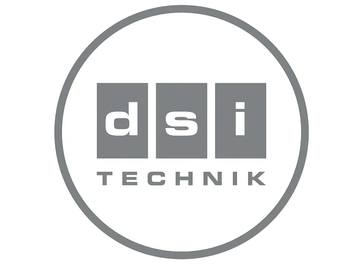

Darba vielas vadība
dsi technology®
Patentētā dsi technology® regulē darba vielas plūsmu dzesēšanas aplī elektroniski. Tādā veidā var ņemt vērā būtiski vairāk parametru, un izplešanās vārsts reaģē daudz ātrāk uz izmaiņām sistēmā.
Rezultāts ir optimizēta darbība dažādos apkures apstākļos, augstāka sezonālā efektivitāte un vienmērīgs komforts gan jaunbūvēs, gan renovācijās.